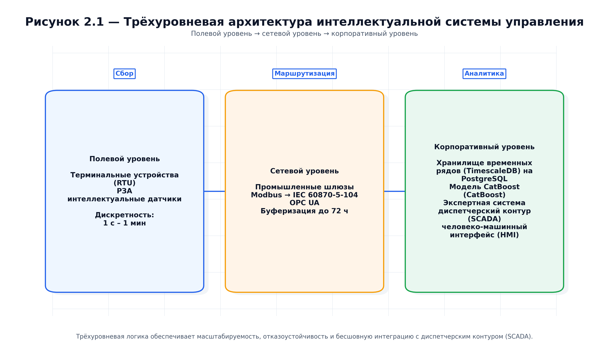
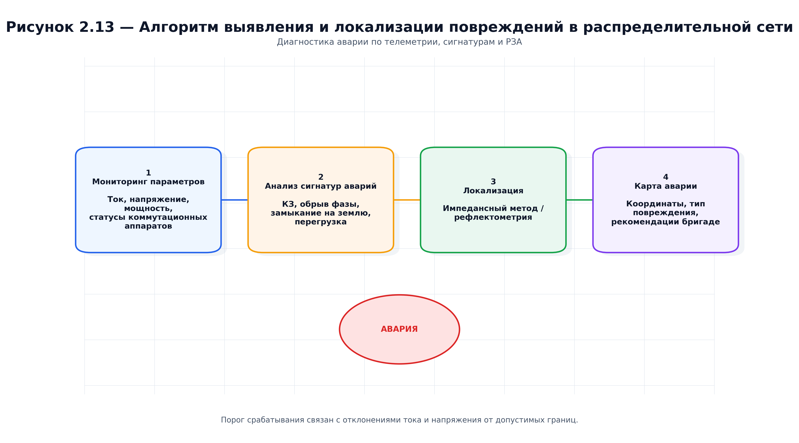
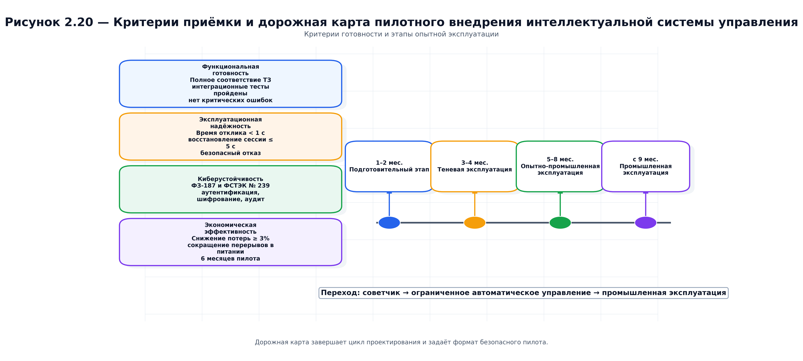
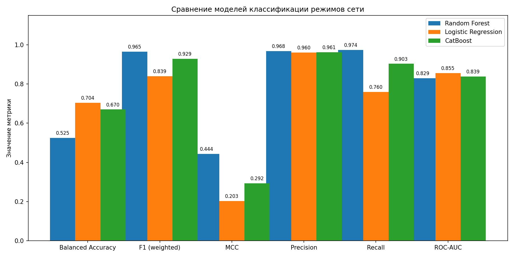
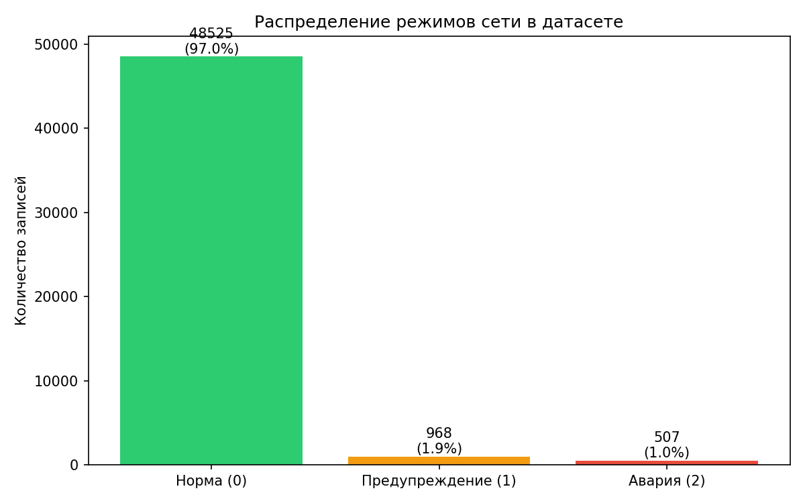
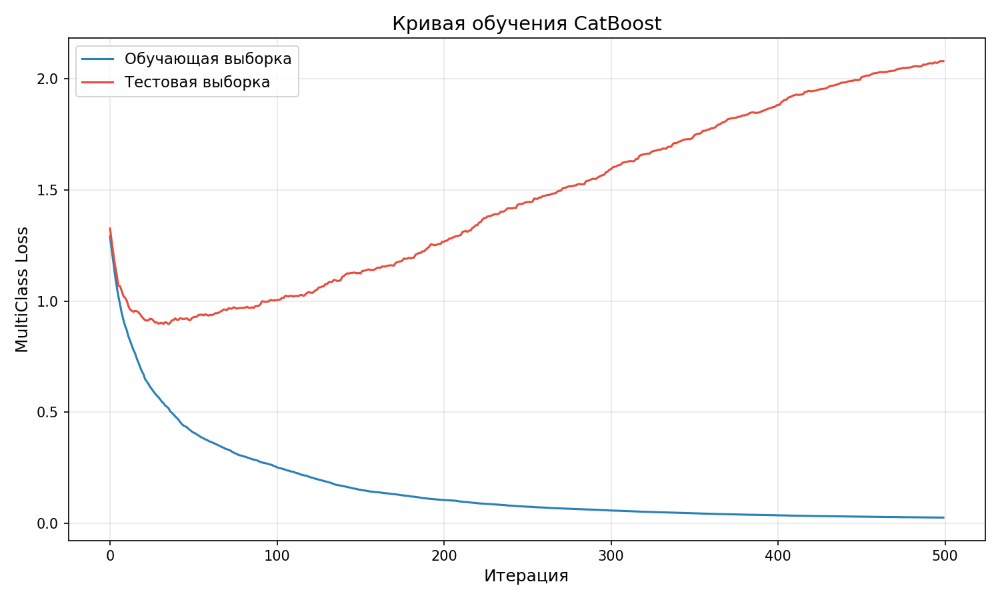
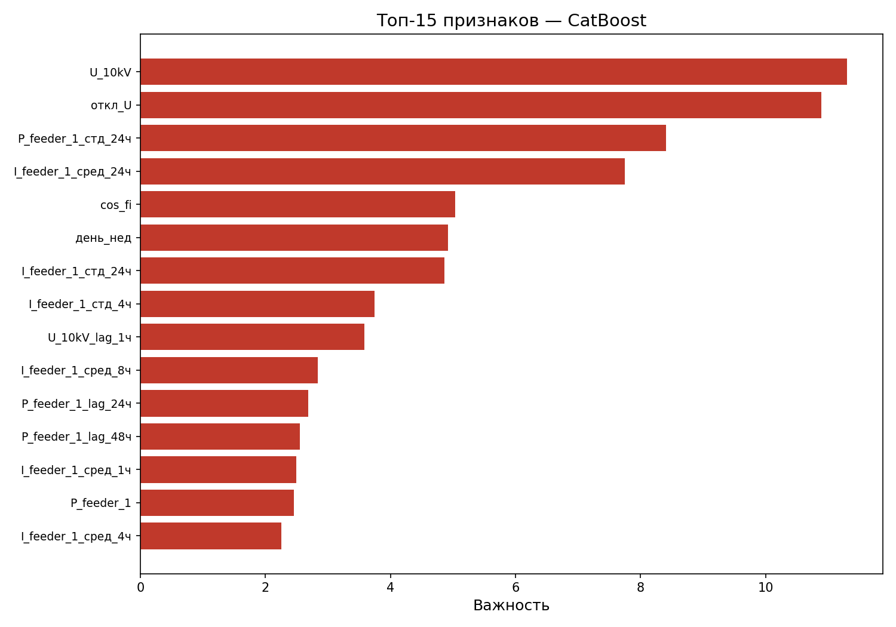
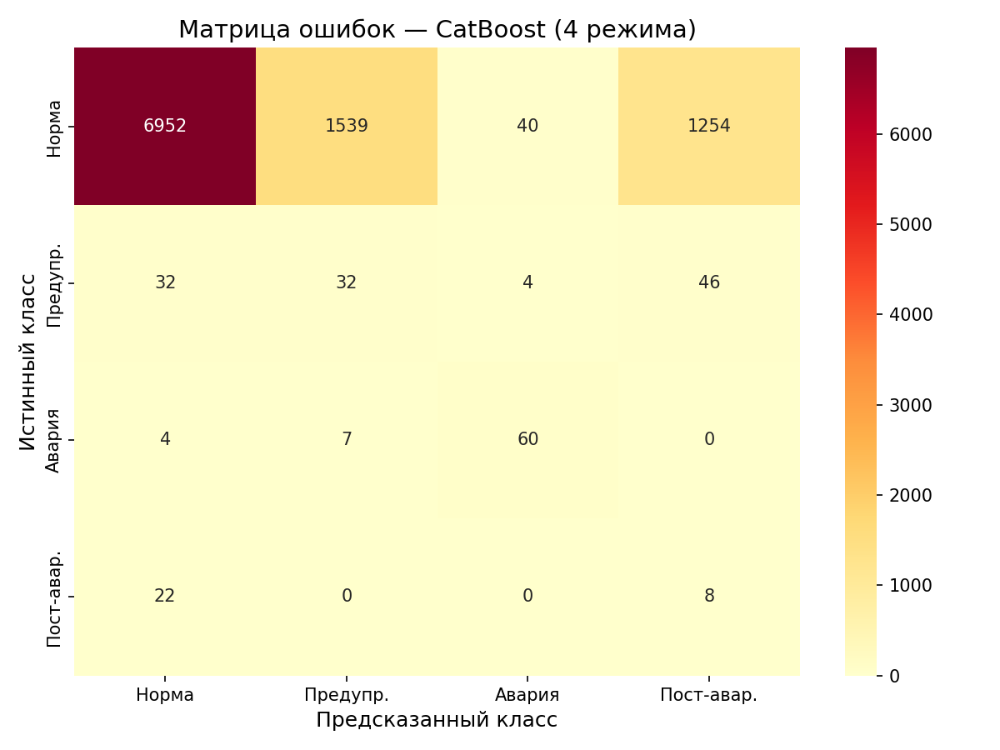
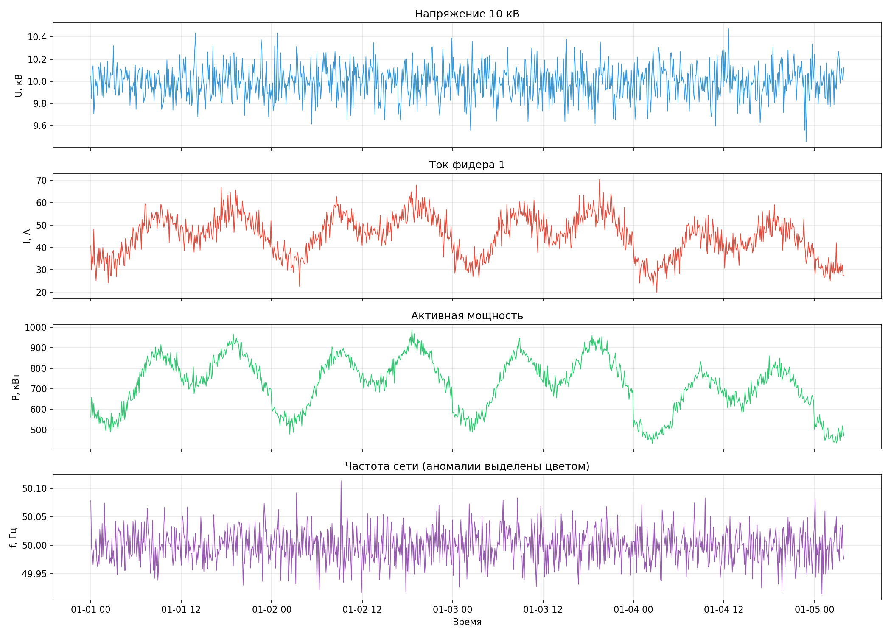

НИР-1 → НИР-2 → НИР-3
Интеллектуальная система управления Ишимбайскими РЭС
Витрина собирает теорию, практическую реализацию и задел на следующий этап. Здесь собраны схемы, таблицы, отчётные графики и экспериментальные материалы, чтобы проект можно было показывать как цельный продукт, а не как набор разрозненных файлов.
20 рисунков НИР-2
9 таблиц отчёта
1 схема периметра
30 встроенных медиа



План работ
Три стадии, которые складываются в один проект
НИР-1 отвечает за теоретическую рамку, НИР-2 превращает её в архитектуру и алгоритмы, а НИР-3 закрепит практику, проверку и масштабирование.
Обзор и постановка задачи
Январь 2026
Анализ литературы, существующих систем, требований к энергетическим сетям и формирование исследовательской рамки для практической части.
Практическая реализация
Май–июнь 2026
Архитектура, поток данных, модель CatBoost (CatBoost), экспертная система, безопасность, тестирование, валидация и дорожная карта пилотного внедрения.
Выводы и масштабирование
Следующий этап
На основе собранных данных и результатов НИР-2 проект переходит к проверке устойчивости, донастройке и подготовке к расширению.
Архитектура проекта
Современная витрина должна быть структурной, а не декоративной
В основе страницы лежит тот же набор приёмов, который хорошо работает в популярных репозиториях с приоритетом документации (documentation-first): крупный hero, карточные блоки, аккуратная сетка, локальные медиа-артефакты и быстрая навигация по разделам.
Поток данных
Оперативная телеметрия (SCADA), АИИС КУЭ, ГИС, метеоданные и календарные признаки сведены в единый конвейер.
Прогноз и диагностика
Модель CatBoost (CatBoost) и производные признаки дают прогнозную часть, а правила экспертной системы фиксируют действие.
Безопасность и периметр
МЭК 62443, демилитаризованная зона (DMZ), межсетевой экран нового поколения (NGFW), аутентификация, журналирование и изоляция зон идут в одном контуре.
Тестирование и приёмка
Модульная, интеграционная и системная проверка завершается пилотной дорожной картой.
Галерея
Все рисунки и таблицы собраны в одном месте
0 визуаловНажмите на фильтр, чтобы показать только нужный слой отчёта: архитектуру, данные, машинное обучение (ML), экспертные правила, алгоритмы, безопасность, тестирование, таблицы или дорожную карту.
Экспериментальный слой
Графики, метрики и проверка на синтетической телеметрии
Здесь собраны не только изображения из отчёта, но и рабочие артефакты экспериментов: распределение классов, сравнение моделей, матрицы ошибок, признаки и динамика обучения.
Экспериментальные данные
Сравнение моделей на синтетической телеметрии

Экспериментальные данные
Распределение режимов

Экспериментальные результаты
Кривая обучения модели CatBoost (CatBoost)

Экспериментальные результаты
Важность признаков

Экспериментальные результаты
Матрица ошибок модели CatBoost (CatBoost)

Экспериментальные данные
Временной ряд и аномалии

Числа из эксперимента
Сводка метрик по результатам эксперимента
Временной сплит без перемешивания, что соответствует сценариям для телеметрии.
| Модель | Сбалансированная точность (Balanced Accuracy) | F1 (взвешенная) | Площадь под ROC-кривой (ROC-AUC) |
|---|---|---|---|
| Случайный лес (Random Forest) | 0.5246 | 0.9654 | 0.8292 |
| Логистическая регрессия (Logistic Regression) | 0.7036 | 0.8394 | 0.8553 |
| Модель CatBoost (CatBoost) | 0.6698 | 0.9286 | 0.8386 |
Артефакты
Быстрый доступ к документам, скриптам и манифестам
Эта витрина не заменяет репозиторий, а собирает самые нужные точки входа в одном месте: отчёты, генераторы, манифест визуалов и экспериментальные результаты.
Документ
НИР-1
Теоретический обзор и постановка задачи
Документ
НИР-2
Практическая реализация и выводы
Скрипт
Генератор рисунков
Набор схем и диаграмм в русском оформлении
Скрипт
Генератор таблиц
Таблицы 1–9 с единым стилем и типографикой
Манифест
Манифест визуалов
Полный список визуалов и их типов
Данные
Таблица метрик
Сравнение моделей на синтетической телеметрии